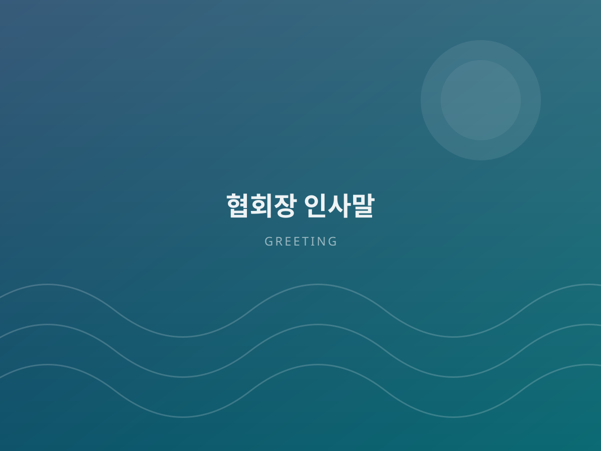

소개 · 인사말About Us
바다에서 일하는 모든 분들과 함께 성장하는 협회가 되겠습니다. Growing together with everyone who works at sea.

협회장 인사말Message from the Chairman
안녕하십니까. 사단법인 한반도 양식 기술보급협회를 찾아주신 여러분께 진심으로 감사드립니다.
우리나라 수산 양식은 오랜 시간 축적된 경험과 빠르게 발전하는 기술이 만나는 지점에 서 있습니다. 그러나 앞선 기술이 연구실과 일부 대형 사업장에 머무는 동안, 정작 현장에서 묵묵히 바다를 지켜 온 어업인들에게는 그 혜택이 충분히 닿지 못했습니다.
저희 협회는 바로 그 간극을 메우기 위해 설립되었습니다. 검증된 양식 기술을 현장의 언어로 풀어 전달하고, 체계적인 기술향상 교육으로 종사자의 역량을 높이며, 해양 안전교육을 통해 무엇보다 소중한 생명을 지키는 일에 힘쓰고 있습니다. 나아가 해외시장 개척을 지원하여 우리 수산물과 양식 기술이 세계로 나아갈 수 있도록 돕고 있습니다.
기술은 나눌수록 커집니다. 앞으로도 협회는 현장을 가장 먼저 찾고, 가장 오래 머무는 기관이 되겠습니다. 여러분의 많은 관심과 참여를 부탁드립니다.
Welcome to the Korea Peninsula Aquaculture Technology Association.
Korean aquaculture stands where decades of accumulated experience meet rapidly advancing technology. Yet while advanced methods often remain within laboratories and large operations, the fishers who sustain our seas every day have not always received their share of those benefits.
Our association exists to close that gap. We translate verified aquaculture technology into practical field guidance, strengthen professional capability through structured training, and protect what matters most — human life — through marine safety education. We also support our members in reaching overseas markets so that Korean seafood and aquaculture technology can travel further.
Technology grows when it is shared. We will always be the organization that arrives at the field first and stays the longest. Thank you for your interest and participation.
협회가 지향하는 가치What We Stand For
기술 보급, 인재 양성, 안전 문화, 국제 협력 — 네 가지 축으로 수산산업의 미래를 준비합니다. Technology, talent, safety and international cooperation — four pillars for the future of fisheries.
기술의 보급Diffusion
검증된 양식 기술을 누구나 활용할 수 있도록 현장에 전달합니다. Bringing verified technology to every farm, not only the largest.
인재의 양성Talent
체계적 교육으로 수산산업을 이끌 전문 인력을 길러냅니다. Structured education that develops the next generation of specialists.
안전의 문화Safety
해양 안전교육으로 사고 없는 일터를 만들어 갑니다. Marine safety education for workplaces without accidents.
세계로의 확장Global
해외시장 개척으로 우리 수산업의 무대를 넓힙니다. Expanding the stage for Korean fisheries around the world.
협회 개요Organization Profile
| 단체명Name | 사단법인 한반도 양식 기술보급협회 Korea Peninsula Aquaculture Technology Association |
|---|---|
| 대표자Chairman | 김창운Kim Chang-woon |
| 설립 형태Type | 사단법인 (비영리)Incorporated non-profit association |
| 주요 분야Field | 전문·과학기술 서비스업 / 교육 서비스업 — 수산산업 기술보급 및 해외시장 개척, 수산산업 기술향상 교육, 해양 안전교육 Professional & scientific services / Education — aquaculture technology diffusion, overseas market development, skill training, marine safety education |
| 연락처Phone | 010-2600-2608 |
| 이메일E-mail | seoul4624@naver.com |
| 주소Address | 준비 중 (주소 확정 후 업데이트 예정)To be updated |
협회 연혁Milestones
설립 이후 걸어온 길입니다. 실제 연혁 자료를 보내주시면 정확한 내용으로 교체해 드립니다. Our journey so far. Actual records will replace this sample content.
조직 구성Structure
협회와 함께하실 분을 기다립니다Join us
회원 가입, 업무 협약, 기술 자문 문의를 환영합니다.Membership, partnership and advisory inquiries are welcome.